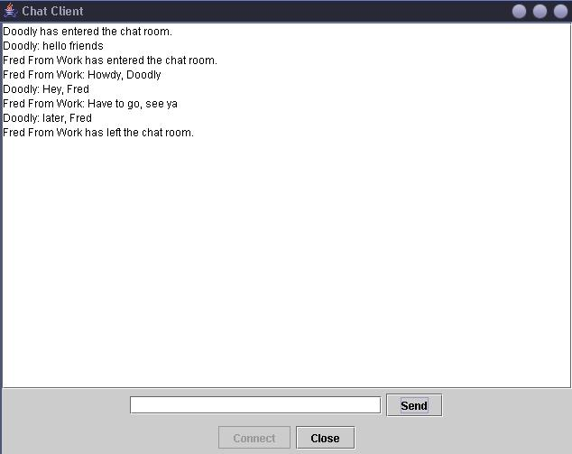

Chat Client/Server
Program Description
This package contains two individual programs--a server and a client. The server, which
utilizes datagram packets, maintains a list of subscribers (machines running the chat client).
This list is updated every time a client connects to the server, and when a client sends a message
to the server, the message is then sent to every address in the subscriber list. The GUI for the
client is very simple, containing a connection dialog and a simple onscreen message display.
Features
- Written in Java build 1.4.2 Standard Edition
- Implements standard Java datagram packets
- Demonstrates a simple client/server application
- Each server can host multiple clients
- Javadocs for Chat
Sample Run
